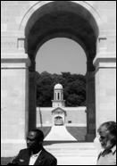

> nieuwsbrief
> Jg. 24 - 3e trimester
2007
| Bijdragen over: |
Ledenbijdrage
jaar 2007
Wie
totnogtoe naliet zijn bijdrage voor 2007 te vereffenen kan dit alsnog.
Na 30
juli geldt onherroepelijk de boekhandelprijs.
Ontmoetingsdag
te Emden
in Oost-Friesland
Verder
in deze Nieuwsbrief vindt u een echo
van onze in alle opzichten geslaagde Studie-uitstap
naar Kevelaer, Straelen en Gelre. Bovendien wordt ook met enige
trots
teruggeblikt op de driedaagse uitstap in het teken van
Vanaf
nu echter wil het bestuur zich inspannen om ook onze Ontmoetingsdag
te Emden in Oost-Friesland omwille van de afstand
een tweedaagse op 12 en 13 oktober 2007 in goede banen te leiden. In
de
volgende Nieuwsbrief méér daarover.
Noteer alvast de data.
Nederlandse
letterkunde
in volkse zin
Zo
luidt de titel van het zeer lezenswaardige essay van de hand van Erik
Verstraete. Het is voor de luttele prijs van 3 (verzending
inbegrepen) te
verkrijgen op het adres van de auteur: J. Ratinckstraat 17, B.2600
Berchem
(bankrekening 035-1910089-06).
Autobiographie et mélange des genres dans Le Labyrinthe du Monde de Marguerite Yourcenar
Doctoraal
proefschrift door Camille van Woerkum
Nederlandse
samenvatting
Met de
trilogie Souvenirs
Pieux, Archives du Nord en Quoi?LEternité,
die samen Le Labyrinthe du Monde
vormen, heeft Marguerite Yourcenar een autobiografie geschreven waarin
zij zelf
nauwelijks voorkomt. In plaats daarvan heeft de literaire kritiek een
mengsel
aangetroffen van familiekroniek, biografieën, essay, roman en in
beperkte mate
autobiografie. Steeds stelt Yourcenar het moment uit waarop zij over
zichzelf
wil vertellen. In haar interviews wil ze niets te maken hebben met
enige
psychologische of psychoanalytische benadering. Psychologen verklaren
deze terughoudendheid
uit de pijnlijke ervaringen die de auteur in haar jeugd heeft opgedaan.
Literaire critici stellen daartegenover dat Marguerite Yourcenar daar
niet
eenduidig last van heeft gehad en dat er evenzoveel passages aan te
wijzen
zijn, waarin de auteur spreekt over gelukkige ervaringen uit haar
jeugd. Het is
heel moeilijk om in de teksten zelf aanwijzingen te vinden voor een
onderliggende emotioneel geladen persoonlijke problematiek.
Mijn
stelling is dat, in weerwil van de uitspraken van
Yourcenar, er wel degelijke sprake is van ingrijpende psychische
processen, die
in de tekst aan de oppervlakte komen. Hierin spelen de genres een
belangrijke
rol. Er bestaat een relatie tussen de vermenging van de genres
enerzijds, en een
conflictueuze psychische materie anderzijds. In een aantal gevallen
verandert
Marguerite Yourcenar van literair genre als ze op een moeilijke
persoonlijke
materie stuit. De psychokritiek, of, beter, de psychostylistiek, die
een
relatie legt tussen stijl en psyche, biedt ons het kader waarbinnen wij
op zoek
kunnen gaan naar stilistische genreveranderingen die op onverwachte
momenten
opduiken, en waarvoor geen verklaring gevonden kan worden in de poëtica
van
Yourcenar.
In mijn
studie heb ik het genetische kluwen in s Werelds Doolhof
ontward. Hierbij ga
ik enerzijds uit van de opvattingen die Yourcenar in haar poëtica
huldigt ten
aanzien van de genres, anderzijds van de stijl die zij hanteert in haar
meer
eenduidige romans en essays. Op deze manier kan ik empirisch laten zien
welke
genetisch eenduidige, en welke mengvormen in dit werk voorkomen.
Enerzijds tref
ik overwegend homogene genrevormen aan van familiekroniek, biografie en
autobiografie. Wat deze homogene vormen met elkaar gemeen hebben is dat
de personages
als individu worden neergezet, in een afgebakend verleden, waarover
retrospectief een oordeel geveld kan worden. Dat oordeel is genuanceerd.
Marguerite
Yourcenar neemt verantwoordelijkheid voor
haar overtuigingen over zichzelf en over haar voorouders. Anderzijds
verbergt
Yourcenar zich in mengvormen waarin ze autobiografie, familiekroniek en
biografie vermengt met essay en roman. In de vermenging met het essay
worden
persoonlijke oordelen geactualiseerd en veralgemeniseerd. Parallel
daaraan
verandert de individualiteit van de personages in anonimiteit. De
oordelen
worden strenger terwijl de oordelende instantie anoniem wordt.
Marguerite
Yourcenar verbergt zich zo achter algemene uitspraken. Ook in de
mengvormen met
de roman verbergt zij zich, ditmaal achter romanpersonages die steeds
meer een
eigen leven gaan leiden. Zo gebruikt de auteur genres om zich te
onttrekken aan
eventuele kritiek van buitenaf. Ze lost op in een soort anonimiteit met
name
wanneer zijzelf of haar personages diskwalificerende oordelen
uitspreken.
Maar de
genetische overgangen laten nog een dieper
liggend mechanisme zien. Binnen alle genres, onafhankelijk van de
personages,
zien we nauwelijks bespeurbare overgangen van een verleden tijd naar
een
tegenwoordige tijd.
Daarnaast
constateren we een plotselinge verdichting,
een hogere frequentie, van emotioneel geladen zelfstandige naamwoorden.
Deze
overgangen vinden plaats in de autobiografie, maar ook in de
familiekroniek en
de biografie, en dat precies op momenten waarin sprake is van hevige
angst,
woede, of schaamte. Marguerite Yourcenar, maar ook haar personages,
blijken
hevige angst te voelen om verlaten te worden. Ze hebben gevoelens van
schaamte
ten opzichte van seksualiteit. Ze voelen hevige woede die ze niet
rechtstreeks
durven te uiten. De individualiteit van de personages, waaronder
Yourcenar
zelf, valt uiteen in een emotionele verbrokkeling op het ogenblik dat
ze tegen
een innerlijk conflict aanlopen. Het handelen valt stil. De emotie
verstart,
wordt in de actualiteit beleefd, alsof ze nog steeds gevoeld wordt.
Toch
hebben deze stilistische verbrokkeling,
verstarring en anonimisering niet het laatste woord. In al even
onverwachte
overgangen naar het genre van de roman komen dezelfde conflicten terug,
maar
ditmaal individueel beleefd door romanpersonages als Jeanne en Egon.
Via deze,
steeds meer fictief wordende personages komen de homogene effecten weer
terug.
Personages worden weer handelende individuen in een herkenbaar kader en
een
passende chronologie. Op deze manier, via fictie, geeft de auteur haar
innerlijke conflicten en dilemmas een plaats in het verleden.
Marguerite
Yourcenar verwerkt haar persoonlijke problematiek door een weg te
bewandelen,
die vertrekt vanuit een stilistische homogeniteit, zich vervolgens
verbreedt
naar een genetische vermenging, en tenslotte weer versmalt naar een
nieuwe
homogeniteit.
Mijn
conclusie is dat niet in de eerste plaats de
inhoud, maar vooral de stijl het bewijs levert voor het bestaan van
innerlijke
conflicten, die Marguerite Yourcenar verborgen wilde houden. Ondanks
haar
weerzin voor een psychologische benadering heeft zij in haar werk niet
kunnen
verhinderen dat haar innerlijke problematiek toch aan de oppervlakte
komt. In
de wisselingen van stijl en genre heeft Marguerite Yourcenar wezenlijke
dingen
van haarzelf aan de openbaarheid prijsgegeven. Maar voorwaarde om die
te
achterhalen is het aandachtig luisteren naar het bijna onhoorbare
"geluid
zelf van het vermengen van de dingen". (Wat? De Eeuwigheid,
p.190)
Nederlandstalige
samenvatting van het doctoraat van
Camiel C.M. van Woerkum Universiteit Utrecht, 2007. De thesis verscheen
recent
ook in boekvorm (247 paginas) en kan bij de auteur besteld worden: C.
van Woerkum,
Snijderswei 6, NL. 5551 RK, Valkenswaard.
De volledige gedrukte versie in
boekvorm, met Engelse en
Nederlandse samenvatting en geïllustreerd met fotos van
Frans-Vlaanderen, kost
19,00 exclusief verzendkosten. Voor Nederland zijn de verzendkosten
2,20 ,
voor het buitenland 5,48 . Te verkrijgen door storting, voor Nederland
op
rekening Rabobank 17 29 38 279; buiten Nederland: IBAN: NL20 RABO 0172
9382 79
- BIC: RABONL2U. Het
geheel valt
overigens ook op het internet na te lezen onder:
http://igitur-archive.library.uu.nl/dissertations/2007-0327-200438/index.htm
Inleiding
Onder al de
historische
plaatsen, die zo talrijk te vinden zijn zowel in Vlaanderen als in
Artesië, is
er toch één die door een buitengewoon toeval op een niet alledaagse
manier
geboekt staat: Guinegate! Driemaal in minder dan zestig jaar werd daar
gevochten
om het bezit van Vlaanderen.
Op 7 augustus 1479
versloeg
aartshertog Maximiliaan van Oostenrijk het leger van de Franse koning
Lodewijk
XI. Deze slag staat bekend als de Slag
van de Opgestroopte Mouwen. We hebben er aandacht aan besteed in
onze
vorige Nieuwsbrief. In wat volgt
staan we stil bij het 2e en 3e treffen.
Op 16 augustus 1513
versloeg
dezelfde Maximiliaan, nu keizer geworden, het Franse leger van koning
Lodewijk
XII in hetgeen later de Tweede Sporenslag
genoemd werd.
En de derde
veldslag van Guinegate?
Die had plaats einde juli 1537, nu tussen keizer Karel V en koning
Frans I en
staat geboekt als de Slag van de
Poederzakken. In wat volgt gaan we even dieper in op de beide
laatst
vernoemde gebeurtenissen.
De
Sporenslag van 16 augustus 1513
Vierendertig jaar
na de
eerste slag van Guinegate, werd op dezelfde plaats, in dezelfde maand
augustus,
opnieuw slag geleverd, een tweede overwinning voor (ondertussen keizer
geworden) Maximiliaan.
Aartshertog
Maximiliaan van
Habsburg (1459-1519) werd inderdaad enkele jaren na de eerste slag,
namelijk in
De zoon van
Maximiliaan en
vader van de toekomstige Karel V, Filips de Schone (1478-1506), die in
1493
meerderjarig verklaard was, stierf op nog jeugdige leeftijd in 1506,
waarna
zijn echtgenote de geschiedenis ingegaan is als Johanna de Waanzinnige.
Daardoor werd Maximiliaan een tweede maal het regentschap over de
Bourgondische
Nederlanden opgedrongen, dat zou duren van 1506 tot 1515. Als
aartshertog van
Oostenrijk en nu ook Rooms Keizer, kon hij echter haast nooit zelf in
de
Nederlanden resideren. Daarom stelde hij zijn dochter Margaretha
(1480-1530)
aan tot landvoogdes. Korte tijd na de tweede slag van Guinegate zal
Margaretha
haar bewind moeten afstaan, op verzoek van de Nederlandse adel, die
grote
bezwaren had tegen deinvloed van haar Bourgondische raadgevers. En dan
wordt
Karel V meerderjarig verklaard (1515).
Maar in 1513 was
het nog zo
ver niet. Ondertussen heette de nieuwe Franse koning Lodewijk XII
(1462-1515).
Hij had in 1498 zijn verre achterneef Karel VIII (1470-1498), zoon van
Lodewijk
XI uit de eerste slag van Guinegate, opgevolgd. Lodewijk XII maakte
handig
gebruik van alle spitsvondigheden die zijn juristen hem op de vanouds
gekende
Franse methode aanboden. Zij interpreteerden immers de teksten van de
vredesverdragen naar hun eigen zin. Zo kon hijzelf volop aanleidingen
vinden en
voorwendsels aangrijpen om tussen te komen in de binnenlandse
aangelegenheden
van vooral Vlaanderen.
En zoals
Maximiliaan destijds
ons land beschermd had tegen de gretige Lodewijk XI, zo moest hij nu de
intriges van Lodewijk XII gaan beantwoorden. Hij werd daarbij goed
geholpen
door zijn dochter landvoogdes Margaretha, die er door onderhandelingen
in
slaagde de Engelse koning Hendrik VIII (1491-1547) aan haar zijde te
krijgen.
Hendrik VIII was op dat moment nog gehuwd met de eerste van zijn zes
vrouwen,
namelijk Katharina van Aragon, zuster van Johanna de Waanzinnige, de
weduwe van
wijlen Filips de Schone
die zelf een broer was van Margaretha. Soms
is
familie toch ergens goed voor!
Maximiliaan en
Margaretha
konden zelfs de Engelse koning zo ver krijgen dat hij met een leger de
oversteek naar het continent maakte om zijn familie een handje toe te
steken.
En begin augustus 1513 was het weer zover. De beide vijandige legers
trokken
tegen elkaar op. Het leger van Lodewijk XII omvatte allen die in die
dagen naam
hadden in de Franse ridderschap. Aan de andere kant stonden opnieuw
vooral de
fameuze infanterietroepen van de Nederlanden, zoals die nog door Karel
de
Stoute (Maximilaans schoonvader) ingesteld waren, deze keer gesteund
door het
Engels expeditiekorps. De twee legers raakten slaags op 16 augustus
In zijn Histoire
de Flandre noteert Jozef Kervyn de Lettenhove: De velden
van Guinegate brachten Maximiliaan steeds geluk. En Louis Brésin, een
tijd- en
streekgenoot, verhaalt in zijn Chroniques
de Flandre et dArtois: Zodra Maximiliaan zag en besefte dat zijn
dappere
soldaten op een ongelooflijke wijze branden van verlangen naar de
strijd,
marcheerde hijzelf vooraan tegen de Fransen op. En wetend dat de plaats
reeds
tevoren ongeluk gebracht had aan de vijand en nog genietend van zijn
vorige
overwinning op de Fransen, ging hij ze woest te lijf, man voor man.
In het Franse kamp,
met haast
kersvers nog de herinneringen aan 1479, kwam het tot een wanhopige en
overhaaste vlucht. De zwierige Franse ridders gebruikten inderdaad
meer de
sporen dan het zwaard. Die nogal harde uitdrukking in het Frans
klinkt ze
eigenlijk mooier: Les Fringants chevaliers, plus que de lépée, jouent
de
léperon stamt uit de mond van Guillaume du Bellay, op dat ogenblik
een
jonge officier, maar later generaal in de legers van Frans I, en staat
opgeschreven in zijn Mémoires. In
Frankrijk is de uitdrukking steeds bewaard gebleven als men het over
deze
veldslag heeft:
Deze gebeurtenis
wekte
inderdaad opzien in de annalen van de ridderschap. Want alhoewel de
meerderheid
van de adellijke heren de Vlaamse troepen niet meer te bieden hadden
dan een
weinig eerbare vlucht, hebben onze voorouders toch de gelegenheid gehad
enkele
levende trofeeën te bemachtigen. Zo viel bijvoorbeeld de beruchte
De
Slag
van de Poederzakken
Guinegate bleek wel
degelijk
een voorbestemde plaats te zijn. Want, hoe onwaarschijnlijk het ook
moge
klinken, hier zou voor de derde maal in minder dan zestig jaar de
Franse
ridderschap in het zand bijten, en zulks opnieuw door toedoen van de
Vlaamse
milities.
In die dagen was
keizer Karel
V (1500-1558), kleinzoon van Maximiliaan en Maria van Bourgondië,
heerser over
de Nederlanden (en nog over geen klein beetje méér) en wellicht op het
toppunt
van zijn macht. In Frankrijk regeerde koning Frans I (1494-1547), die
in 1515
zijn overleden oom Lodewijk XII (die geen zoon naliet) opgevolgd was.
Over de vele
oorlogen tussen Karel V en Frans I zijn ontelbare boeken geschreven.
Maar we
gaan het hier alleen hebben over hun zoveelste confrontatie, een
vrijdag in
juli 1537 te Guinegate.
Frans I was alweer
eens hij
was bijlange niet aan zijn proefstuk onze Lage Landen binnengevallen.
Inderdaad, vanaf 1521 was Frankrijk haast ononderbroken tot en met
Het was maar een
zwak
keizerlijk leger, waarvan een contingent van ongeveer 8000 Vlamingen de
hoofdmoot uitmaakte, dat zich op weg begaf om te pogen de Fransen te
verdrijven. Dit leger stond onder het commando van Maximiliaan van
Egmond.
Maximiliaan van
Egmond (+
1548), graaf van Buren, was een kleinzoon van Frederik van Egmond
(1440-1521),
een jongere broer van Jan III van Egmond (1438-1516), de grootvader van
Lamoraal van Egmond, onze grote Egmond. Zijn dochter, Anna van Egmond
(1533-1558), gravin van Buren, was de eerste echtgenote (1551) van haar
jaargenoot Willem de Zwijger.
Maximiliaan liet
zijn troepen
optrekken naar Terwaan, waar een deel van het Franse leger zich
verschanst had.
Terwaan werd belegerd. Maar er kwam al spoedig een Frans hulpkorps
opdagen om
de belegerde stad te ontzetten. De overmoedige bevelhebbers van die
hulptroepen
waren er rotsvast van overtuigd dat ze zonder veel moeite korte metten
konden
maken met het Vlaamse voetvolk en aldus het beleg ongedaan konden
maken. Maar
bij de eerste schermutselingen lieten ze zich nabij Guinegate al in de
pan
hakken. Enkele dagen later, op 30 juli 1537, werd in Bomy, een gehucht
van
Guinegate, een bestand gesloten tussen beide kampen en zo kwam er al
heel
spoedig een einde aan de krijgsverrichtingen.
De volkshumor, die
geen
medelijden kent voor abnormale tegenspoed, is niet mals geweest voor de
verliezers van 1537. De poederzakken, die het hulpkorps lichtzinnig
beloofd had
ter bevoorrading van de belegerden in de stad mee te brengen,
leverden door
de nederlaag van de Fransen aan deze korte veldslag de benaming
Journée des
Sacquelets op. In het Picardisch werd dat op geestige wijze vertaald
als
Journée des Pourettes, waarbij pourre in het Picardisch staat voor
poudre
(poeder), en pourettes voor poedertjes maar ook voor stof. De
Fransen
waren inderdaad maar stof geweest.
Jean-Marie Gantois
citeert in
zijn verhaal over deze veldslag nog een leuk versje uit een pamflet,
dat in die
tijd in de streek circuleerde en dat door aan zekere Le Glay,
archivaris,
ontdekt werd:
En
lan de grâce XV cent et XXXVII,
Ung
vendredi en jullette, proprement,
Que les
Franchois plain dorgueil comme on scet
Pensant
faire ravitaillement
A
Terouanne, portant honnestement
Les
sacquelés, en guise de malettes,
Pour
bien parler de ce jour proprement,
On le
nomra la journée des pourettes.
Vrij vertaald:
Het was in het
jaar van
genade 1537, en wel op een vrijdag in juli, dat de Fransen, vol van
hoogmoed,
zoals men goed weet, van plan waren Terwaan te geen bevoorraden. Ze
droegen
heel netjes verpakt in koffertjes poederzakken. En om deze dag
eigenlijk
goed te onthouden, noemt men hem voortaan dan ook de dag van de
poederzakken.
Literatuur
Gérard Landry &
Patrick
de Verrewaere, Histoire secrète de
Jean-Marie Gantois,
De Zuidelijkste Nederlanden, Oranje,
Wilrijk, 1967.
Pieter Geyl, De geschiedenis van de Nederlandse Stam, deel
1 (tot 1581), Wereldbibliotheek, Amsterdam/Antwerpen, 1961.
________________
Met dank en
enigszins
ingekort overgenomen uit Het Verbond, 18e
jg., nr. 7, september 2006. De eerste slag bij Guinegate werd uitvoerig
behandeld in het voorafgaande nr. 6 van hetzelfde tijdschrift en
gepubliceerd
in onze Nieuwsbrief 1/2007.
Regis
de Mol
Monsieur
le Président,
(*)
Ce 8 mai,
au cours
dune interview que vous avez accordée â Radio Clas-sique, vous avez
souscrit à
ce vieux mythe de larchitecture dite espagnole de certaines de nos
villes,
comme Arras, et plus généralement, de linfluence espagnole en
Flandre. Quil
me soit permis dapporter quelques rec-tifications â ces légendes
inlassablement reprises et véhiculées auprès des médias et de la
population,
qui ont fini par y croire!
QuelIe occupation
espagnote?
Le Flamand
Charles
Quint, né a Gand (1500-1558), et ses successeurs (nés en Espagne)
étaient
considérés par leurs sujets du nord comme leurs princes naturels, le
rol
dEspagne étant également comte de Flandre. Les différentes provinces
des
Pays-Bas (dont
Il ny a
donc pas eu
de colonisation espagnole, au sens compris habitueliement, de nos
contrées,
ce que tous les historiens sérieux confirment. Il convient donc de
tordre le
cou iniassablement â lindélébile mythe espagnol qui afflige encore
trop de nos
compatriotes complexés et maintenus dans lignorance.
1.
Larchitecture des pignons dentelés est née en Flandre vers le XIVème
siècle,
bien avant les naissances de Charles Quint et de Philippe II. Elle sera
exportée sur tout le pourtour de
2. Les très
nombreux noms de familie se terminant en -ez sont typiques de notre
région et
ne doivent rien â une
origine espagnole, contrairement â la conviction parfois sans appel de
leurs
porteurs.
Exemples
de noms
régionaux répandus: BOUCHEZ,
DUPREZ.
DURIEZ, FIEVEZ, GRIMONPREZ, MULLIEZ, P0TEZ,. THIRIEZ, THOREZ,
etc. Tous ces noms sont inexistants en
Espagne.
Exemples
des six noms
les plus répandus en Espagne: GOMEZ,
LOPEZ, SANCHEZ, GONZALEZ, ALVAREZ, FERNANDEZ, etc. Ces noms sont
introuvables chez nous en dehors de limmigration récente.
Le z
serait soit une
fantaisie graphique (boucle ornementale finale interprétée en z), soit
la
marque dun génitif dorigine flamande. Les spécialistes sont davis
partagés
sur cette question, mais tous rejettent lhypothèse espagnole!
Nota: on
retrouve le
même phénomène en Savoie avec les noms en -oz (Mermoz, Vuillermoz,
etc.) région
nayant pas connu doccupation espagnole!
3.
Quant aux
yeux noirs ou aux cheveux foncés, ils ont toujours existé et ne doivent
rien
aux hidalgos! Les races pures nont jamais existé! Les garnisons du roi
dEspagne, qui était aussi comte de Flandre, étaient dailleurs
composées
essentiellement de mercenaires suisses, lombards, allemands. wallons et
...flamands!
4. Il ny a pas de mots espagnols
dans les
langues régionales, bien quil
puisse y avoir des similitudes entre certains termes picards et
espagnols, ce
qui est logique, ces deux langues étant issues du latin!
Nos
origines espagnoles? Ce cliché non innocent contribue â masquer notre
véritable identité qui doit davantage aux rivages nordiques quaux
rivages méditerranéens!...ce
qui nôte rien aux grandes qualités du peuple espagnol!
LAlliance
Régionale Flandre-Artois-Hainaut que je préside lutte pour
lamélioration de
limage de marque de
Comme
vous, je le
pense, nous sommes attachés à cette région et nous vous proposons de
vous aider
â la faire connaître et reconnaître en publiant par exemple un recueil
dhistoire régionale (pourquoi pas en bande dessinée?) afin de rétablir
les
principales périodes de notre histoire, en toute ohjectivté. Ce recueil
pourrait être distribué ensuite dans les collèges ou lycées de la
région.
Dans
1attente de vous
lire, veuillez agréer, Monsieur le Président. 1 expression de mes
sentiments
régionalistes. fédéralistes et européens.
Regis de Mol
Président de
lAlliance
régionale Flandre-Artois-Hainaut
Guise, Laon, le
Chemin des
Dames, Prémontré, Noyon, Senlis, Chantilly, Orry
Stuk
voor stuk zijn het plaatsen, die zich nu in Frankrijk bevinden,
doch die een onmiskenbare band met de Nederlanden nauwelijks verborgen
houden.
Minder
bekend in zowel noord als zuid is Orry-la-Ville. Daar bevindt zich een Nederlandse
erebegraafplaats met de
graven van 114 Nederlandse burgers en militairen die in de Tweede
Wereldoorlog
zijn omgekomen in Frankrijk. Jaarlijks op 4 mei wordt een
herdenkingsplechtigheid gehouden waarbij Nederlandse en Franse
autoriteiten een
krans leggen. Het ereveld, dat aan de drukke Route Nationale 17 naar
Senlis
ligt, biedt een en al rust, verpozing en bezinning.
Iets
bekender, doch niet bij het ruime publiek is het Suid-Afrikaanse
erepark of memoriaal te Longueval nabij Bapaume. Daar werd ons
gezelschap in
het Afrikaans verwelkomd door de heer Thapedi Masanabo, directeur van
het
prachtige domein. Een kort, maar aangenaam gesprek, deels in het
Afrikaans,
deels in het Nederlands, vond bij het Delvillebos plaats. Het zacht
zangerige
Afrikaans kleurde nog meer de reis. Hier volgt nog een beschrijving van
het
hele gebied zoals het o.a. grotendeels door wikipedia wordt
weergegeven.
Longueval/Delvillebos.
Aan de voet van de triomf-boog verwelkomt directeur Thapedi Masanbo
(links) de
bezoekers in het Afrikaans. In de verte ontwaart men de replica van het
Kasteel
van Kaapstad. Zannekin-voorzitter
Delvillebos (in
Frans, Bois d'Elville) is n klein bos by die dorp Longueval in die
Somme
vallei in Frankryk. Die Suid-Afrikaanse Oorloggedenkteken en die
Delvillebos-gedenkmuseum ter herinnering aan Suid-Afrikaners, wat aan
twee
wêreldoorloë, die oorlog in Korea en die Berlynse Lugbrug deelgeneem
het, is in
1986 geopen. Die museum is 'n verkleinde weergawe van die Kasteel die
Goeie
Hoop in Kaapstad. Tydens die Eerste Wêreldoorlog (1914 1918), het 121
offisiere en 3 032 manskappe van die Eerste Suid-Afrikaanse Infanterie
Brigade
op 14 Julie
Kevelaer was een
voltreffer,
Oost-Friesland komt eraan
Kevelaer,
Straelen, Gelre, drie prachtstadjes in Opper-Gelderland. De
voorjaarstudiereis was een schot in de roos op zowel cultuur-historisch
als
religieus-humaan vlak.
Het
was mede een voltreffer omdat Zannekins vice-voorzitter
In het
najaar wordt het Emden in Oost-Friesland. Noteer nu alvast al 12
en 13 oktober 2007. U verneemt er meer over in ons volgend nummer.